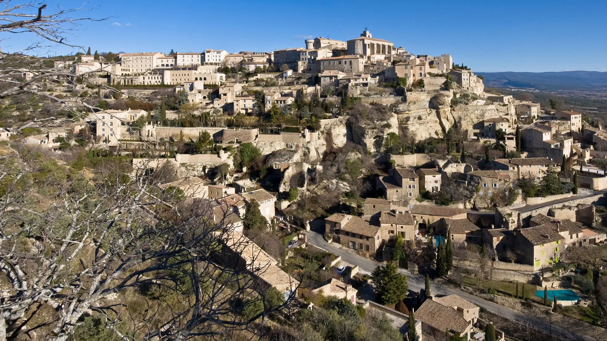

{kind=link}
관광·미술관
Nous avons déjà des billets.
이미 표가 있습니다.
누 자봉 데자 데 비예

뤼베롱 계곡을 굽어보는 해발 340m 석회암 암반 능선 위에 계단식으로 세워진 프랑스에서 가장 아름다운 마을(Les Plus Beaux Villages de France)의 대표 주자다.
갈로-로마 시대부터 외적의 침략을 감시하고 방어하기 위해 천연 요새 지형 위에 건설되었으며, 1031년 세워진 중세 성채(Château de Gordes)와 12세기 생피르맹 성당(Église Saint-Firmin)을 중심으로 베이지색 건식 석조 가옥들이 깎아지른 절벽을 따라 빽빽하게 군락을 이루고 있다.
마을 내부 골목 산책뿐만 아니라, 남쪽 진입 도로에서 절벽 전체를 한눈에 조망하는 파노라마 뷰포인트가 전 세계 여행자들에게 가장 유명한 프로방스의 시그니처 엽서 풍경을 선사한다.
"마을 안으로 들어가기 전에, 진입 도로 전망대(Town View Point)에서 절벽에 층층이 얹힌 거대한 석조 요새의 실루엣을 먼저 눈에 담아야 한다." 마을 안으로 들어가면 미로 같은 경사 골목과 상점들이 이어지지만, 고르드 특유의 압도적인 입체감은 밖에서 바라볼 때 가장 완벽하게 드러난다. 60~90분간 전망대 사진 촬영과 성채 광장 산책을 즐기기에 최적이다.
| 운영시간 | 성 10:00~13:00(최종입장 12:30), 14:00~18:00(최종입장 17:30). 성인 6유로 |
|---|---|
| 휴무 | 성(Château de Gordes, 전시공간)은 주 7일 개관. 2026년 휴관: 4/26~27(도서전), 12/19~22(크리스마스 마켓), 12/25, 1/1 — 9/13~16 휴관 없음 |
| 가격대 | €10-€25 |
| 예약 | 개인 방문 예약 불필요(현장 발권). 10인 이상 단체만 사전 문의 |
9/14 체크인, 9/16 체크아웃의 2박 정본이다(숙소 미정 — 현지 결정). 화요일 08:00–13:00 시장은 Day 18(9/15 화) 아침과 겹친다 — 2박 중 유일한 장날이므로 Day 18 오전 MUST로 본다.
| 항목 | 상세 정보 |
|---|---|
| 위치 | 84220 Gordes, Vaucluse |
| 마을 입장/요금 | 연중 상시 개방 / 무료 |
| 추천 주차장 | Parking du Belvédère / Charles de Gaulle (전망대 인근, 유료) 또는 Parking de la Poste / Réservoir (마을 상부 진입) |
| 주차 요금 | 유료 무인 정산기 (시간당 약 €3~€4, 1일권 정액제 운영) |
| 화요 시장 (⚠ 필수 주의) | 매주 화요일 오전 08:00–13:00: 뤼베롱에서 가장 인기 있는 시장이 열려 09:30 이후에는 모든 주차장이 만차되고 진입로가 극심하게 정체됨. 화요일 방문 시 반드시 08:30 이전 도착을 목표로 해야 함 |
| 도로 접근/연계 | Coustellet에서 D15 도로로 약 15분 / Sénanque 수도원(D177 북쪽 10분), Village des Bories(D2 서쪽 10분) 연계 최적 |
Nous avons déjà des billets.
이미 표가 있습니다.
누 자봉 데자 데 비예
On peut prendre des photos ?
사진 찍어도 되나요?
옹 푀 프랑드르 데 포토
Où commence la visite ?
관람은 어디서 시작하나요?
우 코망스 라 비지트

Gordes 북쪽 좁은 계곡의 12세기 Cistercian 수도원. 화려함보다 절제된 로마네스크 건축과 침묵의 공간이 핵심이다.

Petit Luberon 북사면을 따라 층층이 올라가는 언덕마을. 정상의 오래된 교회에서 Lacoste와 Calavon 계곡을 바라보는 전망이 핵심이다.

뤼베롱 현지 농부들이 직접 재배하고 만든 신선 농산물과 특산품을 판매하는 생산자 직거래 일요 시장. 이번 Day 17–18 일정에는 넣지 않은 지역 참고 Place다.

대형 관광버스가 닿지 않아 뤼베롱에서 가장 고요하고 평화로운 '숨겨진 보석' 마을. 언덕 정상의 17세기 예루살렘 풍차(Moulin de Jérusalem)와 현지인들의 정겨운 일상이 살아있는 골목길.

Bonnieux 맞은편 언덕에 붙은 작은 석조마을. 중세 성벽 골목과 Marquis de Sade로 알려진 성터가 마을의 성격을 만든다.

뤼베롱 남쪽 기슭의 평지형 마을. 카페·상점·갤러리와 르네상스 성이 어우러진 우아한 생활형 프로방스다.